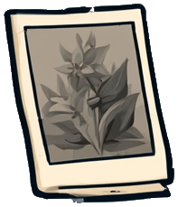
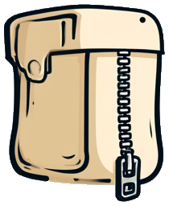
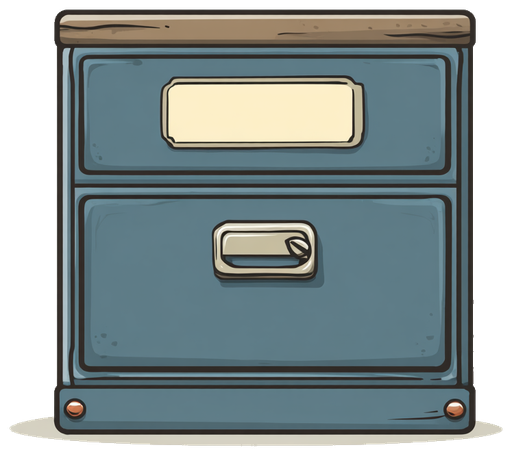
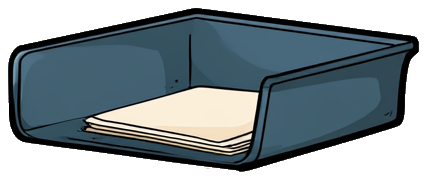
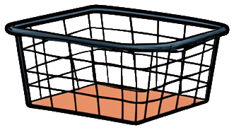
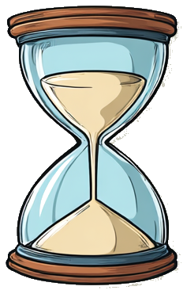

The eight apps that make Ledge worth leaving running, drawn against
showcase-and-ai-demos.md and the v2 design system. Every app clears the five-part bar below.
No agent chrome anywhere — the intelligence is in the authoring, not the ornament; nothing here wears a
badge. Two apps are live rather than illustrated: Now Playing generates a real performance you can scrub
through, and Focus Garden grows from a real ledger.
| App | Signature | What accumulates | Background |
|---|---|---|---|
| Now Playing | a generative performance per play | albums become visually recognisable | track change, new device |
| Weatherglass | drag the clock, not the sky | real weather, daylight, season | rain starting, threshold crossed |
| Departures | a split-flap board whose rows climb | saved stations, learned buffer | leave now, platform changed |
| Night Sky | the notch is the horizon | saved events, observation log | conjunctions, good viewing |
| Focus Garden | a landscape grown from the ledger | the whole app is accumulation | session ends |
| Chess | captures, trails, and a game ribbon | daily positions, records, replays | your move (async only) |
| Tetris | physicality around intact rules | daily seeds, records, ghosts | none — and that's the point |
| Shelf | a file visibly travels its rule | the machine you assembled | needs a decision, or failed |
Now Playing. Artwork yields a stable track genome — palette, density, flow coherence, symmetry — so a song keeps a recognisable visual identity. Every play adds a fresh performance seed, so it is never the same twice. Drag the position bar below to move through the four acts: forms emerge, structures develop, one rule breaks near the late passage, then everything thins and resolves as the track ends.
The grammar is flowing paths, not particles — deliberately, per the op budget: forty rich paths say more than a thousand loose points and cost a third as much on the wire. Nothing here pretends to hear the music; the narrative is driven by position and duration, which is all we honestly have until Ledge has audio features.
genome = palette + flow coherence + density + symmetry (stable per track) · seed = per play · quiet band under the dock is drawn by the scene, not sampled by the shell — deterministic, so the frost never shimmers
Weatherglass. The panel is a wall with three physical things on it: a window onto the
sky, a thermostat showing the temperature at the selected hour with the real NOW kept beneath it,
and a clock handle on a track. You drag the clock, not the sky — moving it changes the world outside and
the reading together. Release snaps to the hour; NOW returns to the present.
handle protrudes from its track · adjacent hour ghost-peeks on first open · the "drag time" hint retires after one successful scrub
Departures. Walking time, your usual buffer, the platform, and live disruptions become one instruction. It's a split-flap board — and that turns out to resolve the design rather than decorate it: a real board's rows climb as their departure nears and drop off the top when they go, so "routes rise toward the notch" and the flap board are the same motion. The flaps below are live; watch a row leave.
One column makes it Ledge's board rather than an airport's. A departure board tells you when the train goes; the first and largest column here is LEAVE — when you go, walking time and your usual buffer already subtracted. That's the whole app in one column.
A mini only when the answer changes — leave now, platform moved, service cancelled, connection at risk. Repeated provider updates coalesce into one human event.
Night Sky. Everything is computed locally from ephemerides — no tracking service, no API to go dark. Drag the track to run the night forward and watch the objects climb their arcs.
One thing to settle. "The notch is the horizon" is literal only when collapsed: the hardware cutout is the skyline, and objects rise past it into the wing — that scene is below. Once the panel is open you are looking at a whole sky, so the horizon has to be at the bottom of the panel where a horizon belongs. Both are true, but they are two different pictures and the phrase only describes the first.
minis are for events both visible and timely — Moon with Venus after sunset, Jupiter clearing the horizon, an eclipse beginning · the user picks which classes may interrupt
Focus Garden. The clearest case of accumulation in the set: the landscape is the session history. Drag the slider to run the ledger forward and watch barren terrain pass through ecological succession — moss and ground cover spread, then shrubs, then trees where the long sessions were.
The ledger is the source of truth, not a saved bitmap, so the garden regenerates deterministically and survives any edit to the app. Long sessions give structural growth; many short ones give density and richness. Missed days never kill anything — this is a record, not a streak to defend.
domain-warped noise → elevation · cellular succession → ground cover · Poisson-disc → spacing · session length → structural growth · two users never converge
Chess. The rules stay orthodox; the character is physical response and memory. Captured pieces collect beside the board, the previous move leaves a fading trail, check sends one restrained pulse through the surface, and the clocks take the wings while a game is live. No permanent evaluation bar — a board that grades every move continuously stops being a game. Analysis is opt-in, after the move or after the game, and the compact ribbon replays the shape of what happened.
trail fades over ~2 s · check = one pulse, never a loop · engine assistance appears only when asked
Tetris. Guideline movement, scoring, hold, preview, daily deterministic seeds, replays, records — all untouched. Ledge adds physicality around the game: hold and next sit in architectural bays beside the well, a hard drop lands with a restrained compression, a line clear ripples through the notch silhouette, and a procedural field behind the grid responds to stack pressure without ever obscuring a cell. Effects confirm state; they never change timing.
One precision worth stating: "60 Hz game" means input and timing precision, not sixty draw frames a second. It already redraws only when something moved — a paused game costs the socket nothing.
Shelf. Deliberately skeuomorphic, because the physical metaphor is what makes a rule legible: new files land on the counter, drawers are destinations, trays hold pending decisions, and chutes perform transformations. A file visibly travels through the rule that handled it — that journey is the whole interface. Open any container to see its matcher, action chain, receipts, failures, and undo.
Ambiguous files stay on the counter rather than guessing. Destructive actions ask. Collisions are previewed, never silently overwritten. Undo pulls the item visibly back to the counter. "Always do this" turns a completed manual action into a proposed rule — which you review before it ever runs on its own.

2 waiting




rules match name, type, source, size, date, or extracted metadata → rename, unzip, convert, OCR, tag, route, archive, open, share, expire · every run leaves a receipt
Outside the flagship eight until its trust model is as polished as its surprise loop. It resurfaces one forgotten photo or document at a chosen cadence and says why it chose it — the same month another year, a place revisited, an unfinished draft. Photos and Documents must be separate grants; prefer limited-library access and user-selected folders; index on-device; show exactly what is indexed; support exclusions and complete deletion; stay useful when only one grant is given. It joins the showcase once Ledge has proven those flows, not before.
Not bundled products. The impressive act is turning one person's peculiar need into ordinary, inspectable software and then leaving it running. Same five beats every time: a concrete desire, one real source inspected, code written in view, hot reload into panel and wing and mini, then a time jump where the monitor delivers a mini while a different app is open.
observe · control · automate · synthesize — the protagonist is the platform, and the app keeps working after the recording stops